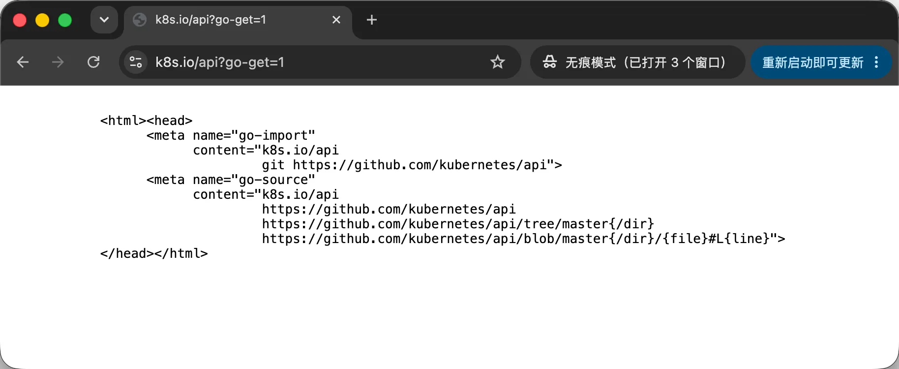
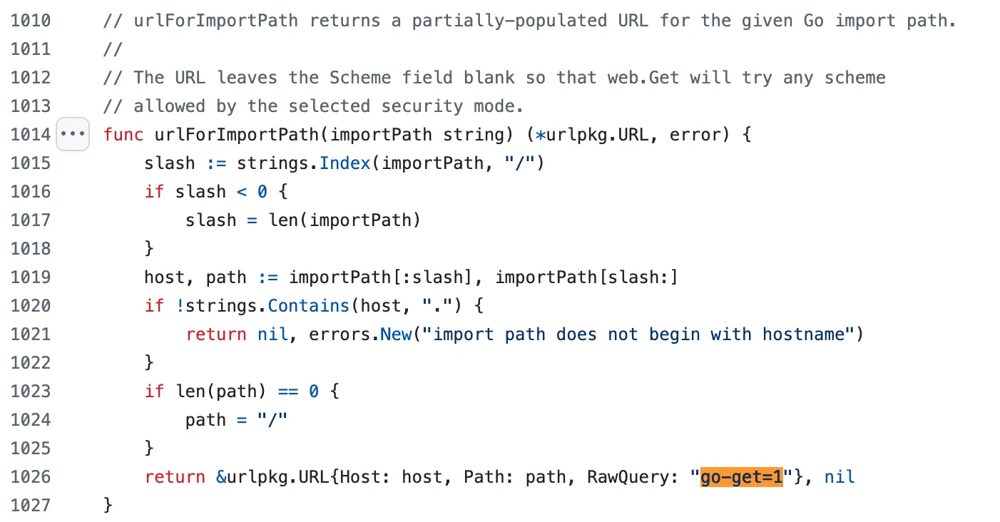
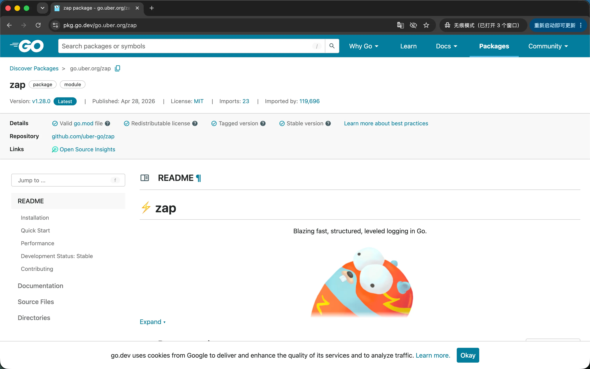
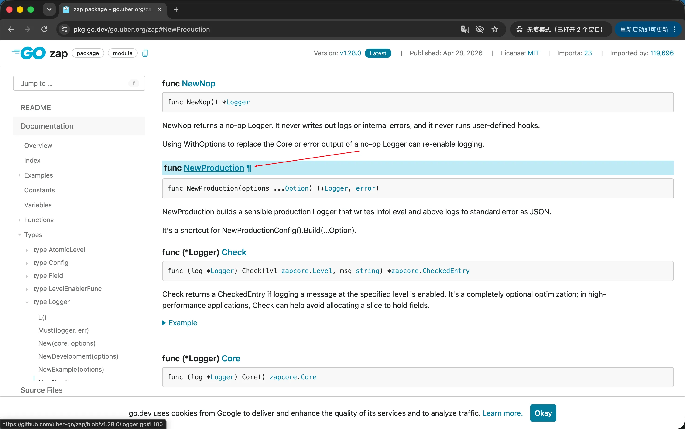
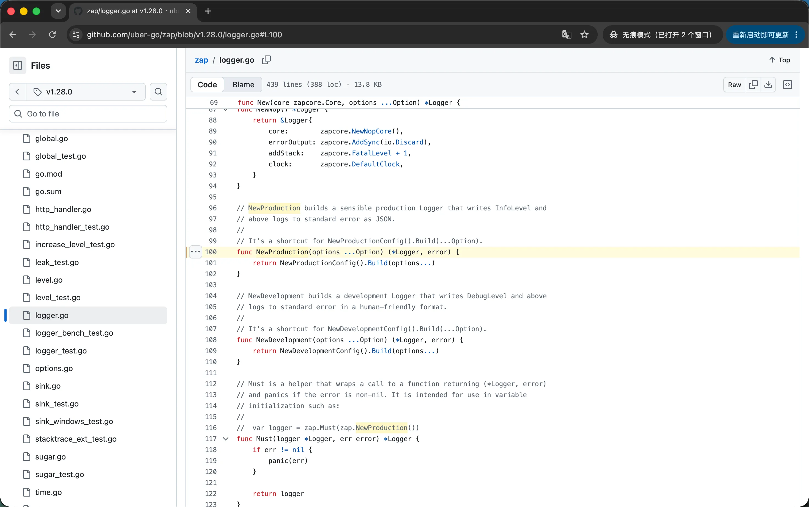
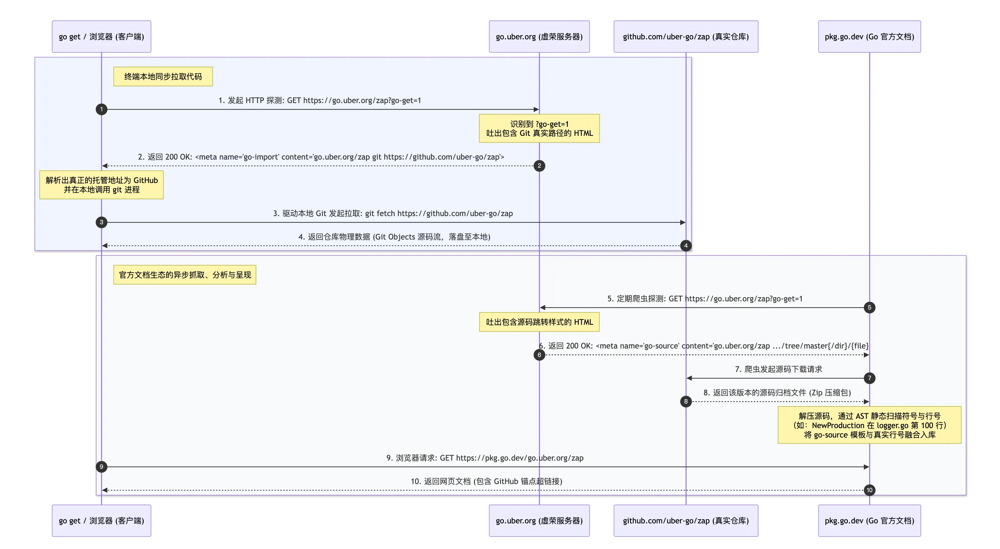

我们知道，Go 语言的包管理哲学和 Python/Node.js 这些前辈有些不同。Python 有一个中央集权的 pypi.org，全世界的第三方库都集中托管在那里。而 Go 从诞生之日起就走了一条彻头彻尾的分布式路线——代码散落在 GitHub、GitLab、Bitbucket 等全球各个角落。
身为一名 Gopher，在日常编码过程中，你一定注意过一些非同寻常的导入路径（Import Path）：
1 | // 权威导入路径（canonical import path） |
不知道你有没有认真思考过，这地址怎么看起来不太对劲？我们知道 无论是 Kubernetes 还是 zap，它们的都是在 GitHub 中开源的代码，那为什么它们的导入路径却是自家域名呢？go get 又是如何通过域名找到源码下载下来的呢？
这就引申出了 Go 生态中一个有意思的的工程概念——虚荣域名（Vanity URLs）。
虚荣域名
为什么会有虚荣域名（Vanity URLs）这个概念，其实这是一个很现实的诉求。
首先，在计算机和互联网领域，Vanity URL 或 Vanity Domain 是一个流行了二三十年的标准行业术语。在英语语境中，Vanity 除了“虚荣”这层含义，在商业和日常生活中更偏向于指：“为了好看、为了凸显个性、为了树立品牌形象而做的事情”。
所以，在 Go 中引入 k8s.io/api 或 go.uber.org，本质上就是 Kubernetes/Uber 团队为了“好看和品牌形象”（Vanity），不想用长长的、寄人篱下的类似 github.com/kubernetes/api 这样的导入路径，而特意套上的一层“个性化精致外壳”。
使用虚荣域名，可以带来几个好处：
- 树立品牌形象，给开源用户一种“大厂出品、官方正版、长期维护”的天然信任感和权威感。
- 摆脱托管平台的绑定，源代码可以非常方便地从 GitHub 迁移到 GitLab。
- Go package 的 import 路径可以更短、更简洁。
- 避免有些无聊的人，在 GitHub 上起个类似的名字和仓库名，冒充官方项目。
核心协议
知道了为什么要引入虚荣域名，我们再来看下，go get到底是如何下载到虚荣域名背后的 Go 包的。
我们同样使用 go get 命令获取一个虚荣域名指向的 Go 包：
1 | $ go get k8s.io/api |
当我们把域名敲进终端时，表面上看起来平淡无奇，但在水面之下，Go 工具链已经开始按照官方制定的“三大核心暗号协议”，向远端服务器发起了探测。
这套对暗号的流程，主要依赖于一个简单又神秘的 URL 参数和两行隐藏在 HTML <head> 里的 <meta> 标签来实现。
暗号一：神秘的 ?go-get=1 敲门砖
当你运行 go get k8s.io/api 时，Go CLI 并不知道这个包的源码在哪。go get 发现这并不是一个常用的代码仓库地址，而是一个第三方域名。于是，它会访问这个目标域名，并在 URL 中塞下一个特殊的参数 ?go-get=1，然后发起一次普通的 HTTP/HTTPS GET 请求：
1 | GET https://k8s.io/api?go-get=1 |
你也许疑惑，为什么要带这个特殊的参数？我想设计之初这是为了与“人类/浏览器”做区分。如果是一个程序员用浏览器直接访问 https://k8s.io/api，那么 K8s 虚荣服务器可以考虑使用 301/302 重定向技术跳转到官方文档/宣传页面。如果识别到 ?go-get=1 参数，虚荣服务器可以心领神会的收起跳转能力，发现暗号对上：“来者是 Go 工具链”，于是它可以不重定向，而是返回一个 200 OK 的纯文本 HTML 响应：

暗号二：go-import 标签（指路明灯）
当 Go 工具链拿到虚荣服务器吐回来的 HTML 后，它会像剥洋葱一样，在 <head> 区域里寻找一行名为 go-import 的元数据标签。
正如我们看到的：
1 | <meta name="go-import" content="k8s.io/api git https://github.com/kubernetes/api"> |
这行标签都是协议相关的信息，它通过空格切开了三个核心要素，直接为 go get 指明了方向：
| 字段名称 | 示例内容 | 它的底层含义 |
|---|---|---|
| 1. Import 前缀 | k8s.io/api |
这个包对外的官方合法身份。Go 校验本地项目导入路径时就认它。 |
| 2. VCS 类型 | git |
告诉 Go 本地工具链：“后台管理代码使用的是 Git”。 |
| 3. 真实仓库地址 | https://github.com/kubernetes/api |
真正的源代码地址！ Go 拿到它之后，就可以扔掉虚荣域名，直接出门左拐奔向 GitHub。 |
暗号三：go-source 标签（文档模具）
在返回的 HTML 里，通常还跟着另外一行孪生标签，叫做 go-source。虽然 go get 在下载源码时基本可以无视它，但它却是整个 Go 官方文档生态（pkg.go.dev）的灵魂：
1 | <meta name="go-source" |
这行标签很长，不过看起来并不乱，但它其实是一套“高亮跳转的动态超链接模具”。它包含四个部分：
k8s.io/api：包的虚荣前缀。https://github.com/kubernetes/api：项目的主页地址。.../tree/master{/dir}：浏览目录时的链接模板。.../blob/master{/dir}/{file}#L{line}：最核心的链接！ 专门留给pkg.go.dev文档服务器的通用模具。
这就是虚荣域名背后的核心协议三部曲。
理论听起来很完美，但作为一个严谨的工程师，我们向来是“不看广告看疗效”。这些嘴上的暗号，在本地终端里到底是怎么一步一步被执行的？接下来，我们直接开启 Go 的“行车记录仪”，去日志现场抓个现行。
现场破案：go get -x 真实日志解读
理论说得再漂亮，不如带上放大镜去案发现场看一眼。这里以 go.uber.org/zap 为例，咱们一起看一下 Go CLI 获取 zap 源码的整个链路。
为了抓到 Go 工具链最真实的动作，我们需要执行如下命令：
1 | $ GOPROXY=direct go get -x -v go.uber.org/zap |
解释下命令中的关键要素：
- 指定环境变量
GOPROXY=direct，强行关闭 Go CLI 代理。 -x(Execute)：打印执行的细节。它会把 Go 工具链在后台偷偷调用的所有外部命令行（如git）以及网络请求（以#开头）毫无保留地打印出来。-v(Verbose)：冗长/详情模式。它会实时打印出当前正在处理的包名、版本号以及查找进度。
你将看到如下一堆日志：
1 | # get https://go.uber.org/?go-get=1 |
看起来很乱，不过没关系，这里我整理一份带注释的精简总结版：
1 | # 阶段一：投石问路 —— 探测虚荣域名边界 |
以上，我们就通过 go get -x 命令，完整的窥探了 Go CLI 获取虚荣域名 Go 包的完整链路。
其实提供这一协议能力支撑的源码就在 Go 仓库中的 vsc 目录下，你可以在其中找到蛛丝马迹：
https://github.com/golang/go/blob/go1.26.0/src/cmd/go/internal/vcs/vcs.go#L1014

官方文档：pkg.go.dev 的未卜先知之谜
对于 K8s 的 k8s.io/api 包，我在前文中展示了浏览器地址栏直接输出 https://k8s.io/api?go-get=1 后，即可得到符合协议的纯文本的 HTML 响应。
不过，如果你在浏览器地址栏通过 https://go.uber.org/zap?go-get=1 访问 Uber 的 go.uber.org/zap 包，你将会被直接跳转到官方文档：

这一点很有意思。
我们用 cURL 命令访问一下，你就明白为什么了：
1 | $ curl https://go.uber.org/zap?go-get=1 |
这里的核心在于带有属性 http-equiv="refresh" 的 <meta> 标签，浏览器渲染引擎非常强大，在解析进 <head> 时，一旦看到 http-equiv="refresh"，便会立刻、无条件地把页面跳转到 url 指定的 https://pkg.go.dev/go.uber.org/zap 文档页。
而 go get 只是一个冷酷的 HTTP 客户端。它拿到 HTML 后，只会用特定的解析器去高亮抓取 name="go-import" 的这一行内容。它根本不去执行什么页面跳转逻辑，拿到了 content 里的 Git 地址，就立刻转头去调用本地的 git 命令拉取代码了。
这就是 Uber 为我们提供的一个额外小惊喜。
我们前文说 go-import 对应的 <meta> 标签是给 go get 使用的，而 go-source 则是给 Go 官方文档使用的。
这个过程大致经历 3 个步骤：
全局账本：index.golang.org
当我们不指定环境变量 GOPROXY=direct，而是直接使用 go get go.uber.org/zap 命令获取 zap 包时，Go CLI 通常默认会使用官方代理 proxy.golang.org 拉取代码。
官方代理服务器如果发现自己缓存里没有这个包，就会替用户去访问 go.uber.org，把代码从 GitHub 拉下来并做好缓存。
重点来了：在缓存完毕的同时，代理服务器会顺手在全局公开的账本 index.golang.org 上写下一行记录：“某年某月某日某时，生态中出现了新模块 go.uber.org/zap”。
内存解剖：AST 静态扫描与行号锁定
pkg.go.dev 的后台有一群永不停歇的守护进程（Workers），一旦看到账本上多了一行 zap 的新记录，爬虫就开始干活了。它会根据大账本里的线索，做两件事：
- 去捞模具：它也去请求一次 https://go.uber.org/zap?go-get=1，把我们上文讲的
go-source那个带有一堆占位符的链接模具（.../blob/master{/dir}/{file}#L{line}）抓回来。 - 去拿物理源码：它从官方代理缓存里把这一版源码的 Zip 压缩包整个拖下来。
接下来，Go 文档服务器会启动 AST 静态分析，此时会将源码转换成如下类似的结构化数据：
1 | └─ File: config.go |
这就形成了一张庞大的符号映射表，比如：
- 符号
Logger声明在logger.go的第 42 行。 - 函数
NewProduction声明在config.go的第 100 行。
智能联动：pkg.go.dev 的超链接魔法
现在，所有的拼图碎片全部集齐了。
当一个开发者坐在电脑前，打开浏览器访问 https://pkg.go.dev/go.uber.org/zap 时，一场精妙绝伦的“三方数据大融合”将在网页前端展开。
- 掏出模具：Go 文档服务会找到之前抓到的
go-source模具：https://github.com/uber-go/zap/tree/master{/dir}/{file}#L{line} - 灌入坐标：注入 AST 扫描出来的真实文件名和行号：
{/dir}->/（根目录）{file}->logger.go{line}->100
- 融合成型：生成一个带有纯静态的锚点超链接的 HTML 页面。
现在，把鼠标移动到 NewProduction 函数上：

点击跳转，你将进入 zap 仓库 GitHub 源码中 NewProduction 方法定义处：

平行宇宙的完美闭环
Go CLI 工具 go get 和官方文档 pkg.go.dev 是两个平行宇宙，却通过 ?go-get=1 形成了完美闭环。
如下我画了一张时序图，来总结二者与虚荣域名的交互链路：

总结
本文通过虚荣域名详细剖析了 Go 工具链中 ?go-get=1 的协议契约。虽然这是一个不太起眼的小功能，但却串起了 Go CLI 以及官方文档的完美闭环。
go-import 是 go get 的指路明灯，让 Go CLI 知道该去哪里获取源代码。
go-source 则是 pkg.go.dev 的精美模具，官方文档服务知道如何渲染第三方包的文档，生成一个带有源码跳转链接的网页文档。
zap 的虚荣域名自动跳转文档，是一个非常值得学习的小 Tips，它把一件小事，做的精致。
最后，留一道作业题，你知道如何实现一个自己的虚荣域名服务器吗？
提示：
可以参考 Google 开源的 govanityurls 项目。
延伸阅读
- Go Modules Reference：https://go.dev/ref/mod#serving-from-proxy
- Go VCS 源码：https://github.com/golang/go/blob/go1.26.0/src/cmd/go/internal/vcs/vcs.go
- 定制Go Package的Go Get导入路径：https://tonybai.com/2017/06/28/set-custom-go-get-import-path-for-go-package/
- Go Vanity URLs：https://github.com/GoogleCloudPlatform/govanityurls
- 本文永久地址：https://jianghushinian.cn/2026/07/25/go-get-1/
联系我
- 公众号：Go编程世界
- 微信：jianghushinian
- 邮箱：jianghushinian007@outlook.com
- 博客：https://jianghushinian.cn
- GitHub：https://github.com/jianghushinian